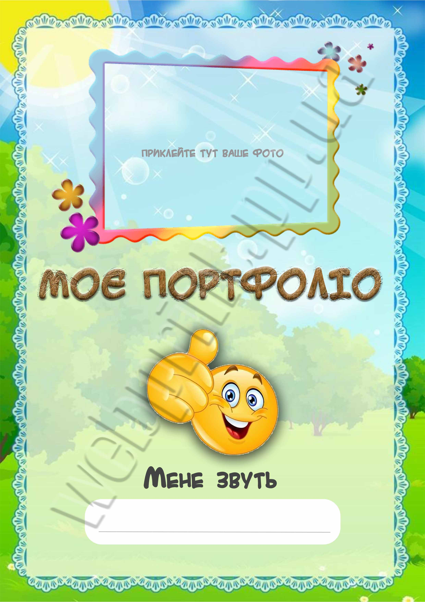

Моє резюме
Професійні вміння
- HTML та створення веб-сторінок
- Базова робота з графікою
- Виготовлення простих сайтів
- Створення структур веб-проєктів
Досвід роботи
| Роки | Посада | Обов’язки |
|---|---|---|
| 2023-2024 | Фриланс | Верстка сторінок, оформлення сайтів |
Освіта
НУХТ — спеціальність "Комп’ютерна інженерія"
Портфоліо
Україна, м. Вінниця
вул. Сильвестра, 52
Email: yuriucorchemny@gmail.com